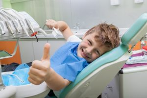

Our goal at Bellingham Smiles is to offer the very best dental care to our patients in our Bellingham, WA and the surrounding communities.
Our entire staff truly believes in continuing our education and learning as much as possible so our practice can offer the highest quality and most up-to-date dental care. We are dedicated to staying up to date with the latest technologies because your dental health is our top priority. We want to make sure you have a smile that you are proud of as easily as possible.
Our entire staff works hard to ensure we have a comfortable office. We try to offer our patients a clean and calming environment.
There is nothing worse than going to the dentist and not being able to talk about your health. We are all here to help answer any questions you may have, no matter how silly you think they are. We can assure you that we have heard most of them already!
If you have any questions about how we can care for your teeth and mouth, please don’t hesitate to call us at (360) 671-4552. Thank you!
Wish that you had dental Insurance? Or are you waiting until you get dental insurance? Wish no more, Bellingham Smiles Dentistry is now offering an alternative to Dental Insurance!
Bellingham Smiles “Dental Health Care Club” is for you and your whole family! It is our own private in-office membership for our New and Existing patients.
For a flat annual fee members will receive: